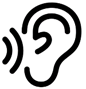
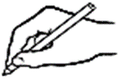
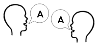

Activity 6: Who is speaking?
Audio: Practice script Marco
 |
Listen to the audio. |
 |
Write the answer in the space provided. |
 |
Repeat the words with your speaking partner. |
Listen to the audio Practice script Marco and answer the question.
Who is talking?
Repeat the following phrases with a speaking partner. Swap roles when you are done.
| Speaking partner A | Speaking partner B |
|---|---|
| Hi. How are you? | I’m great. |
| It’s nice to meet you. | It’s nice to meet you too. |
| See you later. | Bye. |
Answers
Listen to the audio.
Write the answer in the space provided.
Repeat the words with your speaking partner.
Who is talking?
Marco
Repeat the following phrases with a speaking partner. Swap roles when you are done.
Check with your teacher or support person.
Show transcript – Practice script Marco
Teacher: Hello.
Student: Hi.
Teacher: How are you?
Student: Good, thanks. How about you?
Teacher: I’m great. What’s your name?
Student: My name is Marco.
Teacher: Can you say your name again?
Student: Yes. My name is Marco.
Teacher: It’s nice to meet you, Marco.
Student: It’s nice to meet you.
Teacher: That’s all for today . See you later.
Student: OK. Bye.